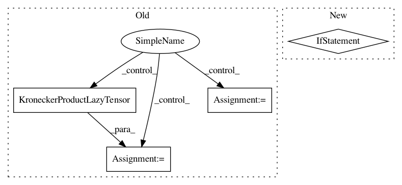

8c40ed8fb56baef7ab5ce8d5ed85bb10e4f09174,gpytorch/lazy/kronecker_product_lazy_tensor.py,KroneckerProductLazyTensor,root_decomposition,#KroneckerProductLazyTensor#Any#,199
Before Change
from gpytorch.lazy import RootLazyTensor
if method == "symeig" or method is None:
evals, evecs = self._symeig(eigenvectors=True, return_evals_as_lazy=True)
// TODO: only use non-zero evals (req. dealing w/ batches...)
f_list = [
evec * eval.diag().clamp(0.0).sqrt().unsqueeze(-2)
for eval, evec in zip(evals.lazy_tensors, evecs.lazy_tensors)
]
F = KroneckerProductLazyTensor(*f_list)
return RootLazyTensor(F)
else:
return super().root_decomposition(method=method)
After Change
from gpytorch.lazy import RootLazyTensor
// return a dense root decomposition if the matrix is small
if self.shape[-1] <= settings.max_cholesky_size.value():
return super().root_decomposition(method=method)
root_list = [lt.root_decomposition(method=method).root for lt in self.lazy_tensors]
kronecker_root = KroneckerProductLazyTensor(*root_list)
return RootLazyTensor(kronecker_root)
In pattern: SUPERPATTERN
Frequency: 3
Non-data size: 4
Instances
Project Name: cornellius-gp/gpytorch
Commit Name: 8c40ed8fb56baef7ab5ce8d5ed85bb10e4f09174
Time: 2020-12-16
Author: wjm363@nyu.edu
File Name: gpytorch/lazy/kronecker_product_lazy_tensor.py
Class Name: KroneckerProductLazyTensor
Method Name: root_decomposition
Project Name: cornellius-gp/gpytorch
Commit Name: 348122d499073a7a58b21d6e5544bc4b47a9ee94
Time: 2020-06-26
Author: wjm363@nyu.edu
File Name: gpytorch/lazy/kronecker_product_added_diag_lazy_tensor.py
Class Name: KroneckerProductAddedDiagLazyTensor
Method Name: inv_quad
Project Name: cornellius-gp/gpytorch
Commit Name: d278768807dff0c1920795073a219577571959d7
Time: 2020-06-26
Author: wjm363@nyu.edu
File Name: gpytorch/lazy/kronecker_product_added_diag_lazy_tensor.py
Class Name: KroneckerProductAddedDiagLazyTensor
Method Name: inv_quad